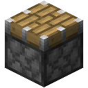

存储
驱动器机架里的存储驱动器，用存储链路连到存储终端和端口上，就组成一个存储网络。它能存任意多种物品和流体，在终端上找出其中任何一种，还会自己把东西搬进搬出箱子、储罐和机器。它里面什么都不需要供能，也没有什么会停摆。
驱动器机架存放驱动器。先放一个驱动器进去。

存储链路从机架通向网络里的其他东西。

链路上的存储终端显示网络存着的一切。

链路和箱子之间的端口把箱子里的东西搬到驱动器上。

存储终端的界面、机架的界面、端口的界面、装配机的界面、处理器的界面、驱动器坞的界面、接入点的界面。
驱动器与机架
驱动器存的种类随你多少：多一种东西，除了这些东西本身，不占别的地方。一桶流体占一件物品的地方。驱动器存的东西跟着驱动器走，挪到别的机架上也一样都在，它的提示文字会说它有多满。
| 驱动器 | 容量 | 制作 |
|---|---|---|
| 存储驱动器 | 262,144 | 在工作台上 |
| 高密度驱动器 | 8,388,608 | 在制造机里，用线性层光掩模 |
| 堆叠驱动器 | 268,435,456 | 在制造机里，用 Transformer 光掩模 |
| 深层驱动器 | 8,589,934,592 | 用八个堆叠驱动器，照中继图纸上的做法 |
 合成
合成


 合成
合成

 合成
合成


驱动器机架能放八个任意大小的驱动器。每个槽位旁有一盏灯显示它的驱动器有多满：空着时暗，还有地方时青色，满了四分之三时琥珀色，满了时红色。
驱动器坞
驱动器坞用矩阵乘法光掩模制造，搬驱动器里的东西比端口快得多：每刻 2,048 件，每秒 40,960 件，或每刻 256 桶。把它接上网络，把驱动器放进左边的槽位，它一次处理一个。用窗口旁的按钮设定，它要么把每个驱动器倒空进网络，要么从网络把它装满；处理完的驱动器（倒空了、装满了，或再没有东西可装）出现在右边。紧挨着机架时没有什么限制它。隔着链路时，链路有多快它就有多快。
要把一切搬到更大的驱动器上，就在这里把大驱动器装满，或把旧驱动器倒空进放着新驱动器的机架。
链路
存储链路把机架、终端和端口连成一个网络。存储方块只要相互挨着就会连上，哪一面都行，端口的正面除外。没有频道，一个网络能连多少方块也没有上限。存储链路不是给模型接线用的信号线缆：两者从不相连。
合成

链路限制的是能走多少。你能看着它们走：东西本身骑在链路上，下面是一束光脉冲，进网络时青色，出网络时琥珀色；流体的光脉冲是它自己的颜色。一段链路每刻运 1,024 件物品，每秒 20,480 件，或每刻 128 桶。端口或驱动器坞搬的东西走最短的路去最近的机架，共用一段链路的一切就平分这 1,024 件。链路满了什么也不会停；其余的只是等下一刻，那条路上的光脉冲变红，端口的界面也会说明。旁边再铺一条线路就多运这么多，而在最常用的端口附近放一个机架，就根本不用走链路。
链路增幅器任何一面都连存储网络，并通过电缆连到电力网络。有电时，它所在网络的每段链路每刻运 4,096 件。只有链路本来会满的那些刻，它才每刻烧 40 FE；链路有余量时什么也不烧。没有电时，一切按原来的速度继续。使用它可查看它的电量和链路现在能运多少。
合成


存储终端
合成

终端显示网络存着的一切，以及每种有多少；网络一有地方存东西，它就亮起来。
- 点击一种东西拿一组，右键拿一半，按住 Shift 点击把一组放进物品栏。
- 拿着一组东西点击网格就把它放进去，右键只放一个。在物品栏里按住 Shift 点击一组，就把它收起来。
- 拿着装满的桶或储罐点击网格，把它倒进去，空的留在手上。拿着空的点击一种流体，把它装满。拿着装满的桶右键，进去的是桶本身。
- 搜索框旁的按钮按名称（名）、数量（#）或模组（@）排序；按住 Shift 点击可反向。
搜索框按名称找东西，每个词都要有。其他条件在前面加个符号：
| 搜索 | 找到 |
|---|---|
ingot | 名称里有“ingot”的 |
@minecraft | 那个模组的东西 |
#ingots | 标签里有“ingots”的 |
$hunger | 提示文字里有“hunger”的 |
*copper | ID 里有“copper”的 |
-iron | 除了含“iron”的一切 |
iron | gold | 二者之一 |
(log | planks) -oak | 分组 |
>64、<10、=1、>=1k | 存着多少（k 表示千，m 表示百万） |
@minecraft ingot -iron 会找出除铁以外的所有锭，>1k 会找出存量超过一千的一切。写成中文的名称和提示文字也能用拼音找，可以打完整的音节、音节开头的几个字母，或每个字只打第一个字母：铁矿石就是 tiekuangshi、tkshi 或 tks。
窗口旁有一个放模型的槽位：放一个检查点，或一张调谐到模型服务器的中继卡，模型要通过检索测试（模型与测试）。搜索以 ? 开头，用平常说话的方式写下你想要什么：?something to light a cave。模型读你写的话，说出它和二十种用途各有多大可能相关；再用同样的方式读网络里每样东西的名称，每样东西只读一次，记下它的位置。两者越一致，东西越相符；相符的排在最前面，最相符的在最前，哪怕名称里没有你写的任何一个词；提示文字里会说它有多相符。一致程度不到百分之三十六（大约相当于两次判断各有六成把握是同一种用途）的不显示。没有模型，或者模型没有通过测试时，? 只按字面查找：名称里含有其中某个词的东西。模型只读英文，模型都是这样。
那个槽位下面是一个合成网格。东西像在工作台上一样放进去，每次合成用掉的材料只要网络里还有就会自动补上，所以按住 Shift 点击产物会一直合成，直到放不下或没有材料。界面关闭时，网格里的东西回到网络。
旁边有 JEI 时，它的搜索框和终端的搜索框内容相同。在合成配方上点它的 +，会从网络和你的物品栏把配方摆进网格，并标出两边都没有的东西；按住 Ctrl 则让网络做出它能做的。在装配机或处理器的界面上点 +，会把配方画在那里；把它列表里的东西拖到过滤或图样的格子上，就是指定它们。
无线终端
无线终端是拿在手里的存储终端界面。对接入点使用它，就调谐到那个网络，之后在覆盖范围内任何地方使用它，或者按你在控制设置里给它的按键，打开物品栏里的第一个。
合成

接入点用注意力光掩模制造，像任何存储方块一样连上网络。它向各个方向覆盖 528 格；同一网络上的链路增幅器有电时，2,112 格。一个网络上能放任意多个，终端按最近的算。很远的网络在界面打开期间一直保持加载。
再往外就靠中继器了。在接入点的槽位里放一张中继卡，调谐到一台中继器覆盖着这个接入点的模型服务器，它的终端在那些中继器覆盖的任何地方都能连到网络，离家多远都行（模型服务）。
便携驱动器
便携驱动器用线性层光掩模制造，能存 1,048,576 件、种类不限的物品，拿在手里就能打开它自己的终端界面，不用机架、链路或电。放在机架里它和别的驱动器一样，驱动器坞也能全速把它装满或倒空，所以它能把网络的一部分带到干活的地方再带回来。
端口
端口把正面贴在一个容器（箱子、木桶、熔炉或别的机器）或储罐上，在它和网络之间搬东西：每刻 64 件，每秒 1,280 件；每刻 8 桶，每秒 160 桶，面前的方块存什么就搬什么。贴着方块放下时，它就朝向那个方块；潜行时对它的某一面使用，可让它的正面转到那一面。它的侧面显示它在做什么，搬东西时会亮。
合成


- 导入把容器里的一切拿进网络；有过滤时，只拿那几种。放在熔炉下面，它拿的是熔炉的产物。
- 导出把过滤列出的几种东西放进容器，只要网络里有、容器里放得下。
- 存量让容器里，过滤列出的每种东西都保持一个数：少了从网络补上，多了收回网络。
- 窗口把容器向网络敞开，网络像用驱动器一样往里存、从里取。优先级高的窗口先存满，过滤限制能放进去的东西。
设置过滤：拿着一组东西点击它的一个槽位，或在物品栏里按住 Shift 点击这组东西；空手点击槽位则清除。过滤里装满的桶指的是其中的流体。存量按桶计算流体。界面会显示端口上一秒搬了多少件。
端口也能按东西是什么来过滤。在它界面旁的槽位里放一个过滤模型：一个检查点，或一张调谐到某台模型服务器的中继卡，其模型通过分拣测试（模型与测试）。这样，放着改名为 Food、Plants、Wood、Stone、Ores 或 Tools 的东西的过滤槽，就代表那一整类：输入时，端口收下模型认为属于这一类的每样东西；输出时，它把网络里这一类的东西全部送出。每样东西只按名字问模型一次，问法和分拣测试一样；模型拿不准的东西算作其他。囤货只按具体的东西，不按类。
导出或保持存量时，端口可以请求缺的东西。打开它界面旁的工作台后，它每秒查看一次过滤器列出的每样东西；如果不够（保持存量时看网络和容器的总和，导出时看网络），就让网络做出其余的：每样东西同一时间只有一个任务，和别的任务一样列在任务里。
端口能做的不止它的模式。它界面上的「程序」可以放程序卡，放了写好的卡，它就改照卡上说的做：可以处理 48 格外的东西，也运流体和能量，能挖、能放、能右键、能打，还能留意周围发生的事。端口自身的模式总是每刻运 64 个物品；程序运多少取决于它的升级。见程序。
规则只在东西不够时才请求，这时耗时长的任务就晚了。目标模型会提前请求。在过滤模型旁边的槽位里放一个检查点或调谐好的中继卡，它的模型要通过需求测试（模型与测试）。端口每五秒为每样东西记下一个数字，表示送出了多少；模型读这一行，写出接下来八次查看。如果它对每一次都有把握，端口就让网络提前做好这些加起来的数量，再加上要保持的数量；如果没有把握，端口就回到规则。把鼠标指向这个槽位就能看到它的预计。放在下方槽位的田间日志会抄下这些行，放进模型核心的数据槽，就是用你自己的基地练习。
装配机
连在网络上的装配机用网络存着的东西做一个配方，再把做出来的放回去。像在工作台上一样，在它的网格里摆出配方：拿着一组东西点击一格，把它这一种摆在那里；空手点击则清除。网格里放的是样子，不是物品。配方做出的东西显示在旁边；界面开着时装配机先停着，所以摆到一半的配方不会被做出来。
告诉它网络里要保持多少成品。网络里一少于这个数，它就开始做，每刻最多做四次，只要网络里有材料；配方剩下的东西，比如空桶，会回到网络里。一台装配机能让另一台不断料：一台保持木棍数量的装配机，能让做火把的那台只要有煤就一直做下去。
贴着装配机的训练加速器（直接贴着，或隔着别的加速器；前四个之外要供电），能让它每刻多做四次；没有东西冷却时只多一半。配方相同的装配机会分担任务的合成，所以每多一台装配机、每多一个加速器，网络一刻能做的就更多。
合成

处理器
处理器替网络运转一台机器：熔炉、冶炼机、酿造台，任何能放进物品又能拿出物品的方块。把它贴着机器放，让正面对着机器，再从其他任意一面连到网络上。它的界面显示一轮的内容：左边是放进去的，右边是产出的，中间是它贴着的机器。拿着一组东西点击一格，放入这个数量；右键再加一个；空手点击清空该格，右键减一个。每个网格有九页，一共 81 格，里面放的是样子，不是物品。
放进去的东西按你摆的顺序进入机器，所以熔炉的矿要摆在煤前面：放入八个粗铁和一块煤，产出八个铁锭。产物里第一项是网络可以请求的东西，其余的随之产出。
一轮要么整轮放进去，要么一点也不放，每刻最多 64 个物品；机器做出来的东西一出现，处理器就把它拿回来。它等着被调用；如果告诉它要保持多少，网络里一少于这个数它也会开工。摆着同一图样的处理器各用各的机器，分担任务的各轮，所以十台熔炉就快十倍。
合成

请求
网络里的装配机和处理器能做的东西，也会显示在终端里：一个都没有时，数量的位置写着合成；有一些时，格子角上有一个青色标记。点击它，或者对有存货的用中键或 Ctrl+点击，就能请求一个数量。终端会随着你输入做出规划：一棵树，列出要用到的一切，每一步写着有多少从存储里取、要做几次合成补足其余（×），以及缺多少（−）。
开始之后，网络里的装配机和处理器就按规划做，任务可以同时进行任意多个；配方相同的会分担它的合成。任务途中做出的东西，它会自己留着，直到任务完成，不让别的东西先拿走。缺东西也能开始：任务会等着，缺的一进网络就接着做。完成时，它做出的一切都放进网络，无论你在哪里都会收到消息。
搜索框旁边的任务列出网络上正在进行的任务、各自做到哪儿、在等什么；点 × 停下一个任务，它已经做出的东西会回到网络里。点击一个任务，就能看到它的规划：一棵树，照规划时的样子，每一步在需要它的那一步下面，并写着它的合成做了多少。
端口和智能体也能请求。端口会请求缺的东西；智能体可以运行 craft 8 torch，而 supply 会去找任务缺的东西：从家附近的箱子和木桶里取，或者挖来，再放进网络（智能体）。
在网格里按住 Alt 点击一种东西，就把它钉在最上面，每个终端最多 18 种；再按住 Alt 点击一次就取消。钉住的东西即使一个不剩也留在那里。正在进行的任务所做的东西会自动排在钉住的东西后面，格子底部有一条进度条，表示任务做到哪儿。
驱动器机架，每个驱动器旁有一盏灯。
存储链路运送网络搬动的东西。
存储终端能找到网络存着的任何东西。
一个端口，正在导入它面前的箱子。
 铁锭晶圆红石粉存储驱动器堆叠驱动器图纸：中继深层驱动器张量机壳铜锭驱动器机架
铁锭晶圆红石粉存储驱动器堆叠驱动器图纸：中继深层驱动器张量机壳铜锭驱动器机架 玻璃存储链路
玻璃存储链路 铜块训练加速器链路增幅器玻璃板存储终端
铜块训练加速器链路增幅器玻璃板存储终端

 紫水晶碎片无线终端
紫水晶碎片无线终端 漏斗活塞端口
漏斗活塞端口 工作台权重晶体装配机熔炉处理器
工作台权重晶体装配机熔炉处理器